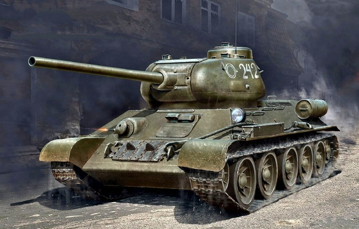

31 марта на вооружение встал известный во всем мире танк, ставший самой массовой машиной в истории танкостроения и без преувеличения лучшим средним танком Второй мировой войны – Т-34
Пожалуй, и формата книги будет мало для того, чтобы описать сложную предвоенную и не менее сложную военную судьбу этого танка. В некоторых странах, к примеру, в Йемене, он стоит на вооружении и успешно ведет боевые действия и в наши дни.
Но для нас судьба Т-34 неразрывно связана с достижением победы в Великой Отечественной войне. Своим огнем и маневром танк вел за собой в атаку наших пехотинцев, броней сдерживал удары растерявшихся асов из панцерваффе, на полной скорости ходил в лихие атаки на полях под Курском против тяжелых «Тигров» и «Пантер». А в конце войны, наматывая на гусеницы сотни километров восточноевропейских дорог и расстреливая по пути из нового мощного орудия уже «королевских» «Тигров», довез наших танкистов до площадей и улиц Берлина.
На пороге войны
К концу 30-х годов грядущий мировой конфликт обретал все более четкие очертания, страны Европы усиленно вооружались. Со времен неповоротливых «стальных монстров» Первой мировой сменилось уже целое поколение бронемашин и танков, в прошлое постепенно уходили и разработки начала тридцатых
Стране требовалась боевая бронированная машина, уверенно действующая в прорыве и в обороне (танки БТ, как оказалось, этого дать уже не могли). Нужна была машина проходимая и с противоснарядным бронированием, надежно держащая удар новых и гораздо более могущественных противотанковых орудий, чем немецкие 37-миллиметровые «колотушки» (чего не давали ни Т-26, ни Т-28, ни Т-35). Требовался современный средний танк, превосходящий тяжелые КВ в подвижности, но не уступающий им в огневой мощи и в бронезащите.
Работы над новой машиной начались в Харьковском КБ завода №183 под руководством легендарного «отца» танка Т-34 Михаила Ильича Кошкина, его биографию вы можете прочитать на нашем портале. Уже опытный в ту пору конструктор, доведший, как у нас принято говорить, до ума легкий БТ-7, с энтузиазмом возглавил работы по новому танку. В короткие сроки харьковчане предложили целых два варианта будущей машины с индексами А-20 и А-32. «Двадцатый» оказался легче, чем нужно, и не имел потенциала к модернизации, а вот «тридцать второй» военным понравился.
Еще в январе 1940 года А-32 превратились в Т-34, броня была увеличена до 45 мм и имела рациональный угол наклона, что повышало ее стойкость, а 45- миллиметровое орудие сменила мощная 76-миллиметровая пушка Л-11, которую чуть позже заменили на Ф-34 (с лучшими характеристиками). Имелась у экипажа и пара пулеметов ДТ. Новые танки нужно было показать военным в Москве. История перегона первых двух «ласточек» своим ходом из Харькова в Москву вне дорог общего пользования даже легла в основу художественного фильма, который, впрочем, больше похож на вымысел.
Характеристики Т-34-76В грозные годы войны

К 22 июня 1941 года в танковых частях и соединениях РККА имелось чуть больше тысячи новых машин. В первых же приграничных боях новая машина отличилась: она не только показала себя с лучшей стороны в бою, но и вызвала уважение со стороны противника.
Уже в первые месяцы войны немало наших танкистов отличились в боях именно на Т-34. К примеру, Герои Советского Союза Дмитрий Федорович Лавриненко (1-я гвардейская танковая бригада, 52 победы за 28 боев, звание присвоено посмертно); Владимир Александрович Бочковский (1-я гвардейская танковая бригада, 36 побед); Николай Родионович Андреев (6-я гвардейская танковая бригада, 27 побед, один танк уничтожен тараном).
В ходе войны конструкция Т-34 постоянно модернизировалась и дополнялась новыми элементами. Основной задачей было удешевить стоимость и трудоемкость его производства. Вместе с тем старались увеличить его боеспособность. На танке появляется командирская башенка, сама конструкция башен претерпевала изменения – от литой и сварной ранних типов до «гайки»; были попытки установки мощнейшего на тот момент 57-миллиметрового противотанкового орудия, упрощались катки и многое другое. Выпускались и самоходки на удачном шасси Т-34 (Су-122, Су-85, Су-100), была огнеметная версия ОТ-34 и ремонтно-эвакуационная машина
От Курска до Победы
С появлением у противника тяжелых танков, превосходящих «тридцатьчетверку» прежде всего в дальности вступления в бой, а значит – в калибре орудия и толщине брони, назрела необходимость коренной модернизации танка.
Новая башня увеличенного объема и с усиленной броневой защитой конструктивно аналогична башне опытного танка Т-43. Повысилась и общая защищенность экипажа, который тоже увеличен до 5 человек, добавлен наводчик, командир освободился от наведения орудия, улучшены условия функционального взаимодействия членов экипажа. Показатели подвижности (быстроходность, маневренность и проходимость) танка Т-34-85 вследствие увеличения его боевой массы снизились незначительно.
Т-34-85 стал танком Победы, вынес на себе основную тяжесть боев и длинных маршей завершающего периода войны. Легендарной в то время стала надежность и ремонтопригодность машины (часто чинили «на коленке»).
Характеристики Т-34-85